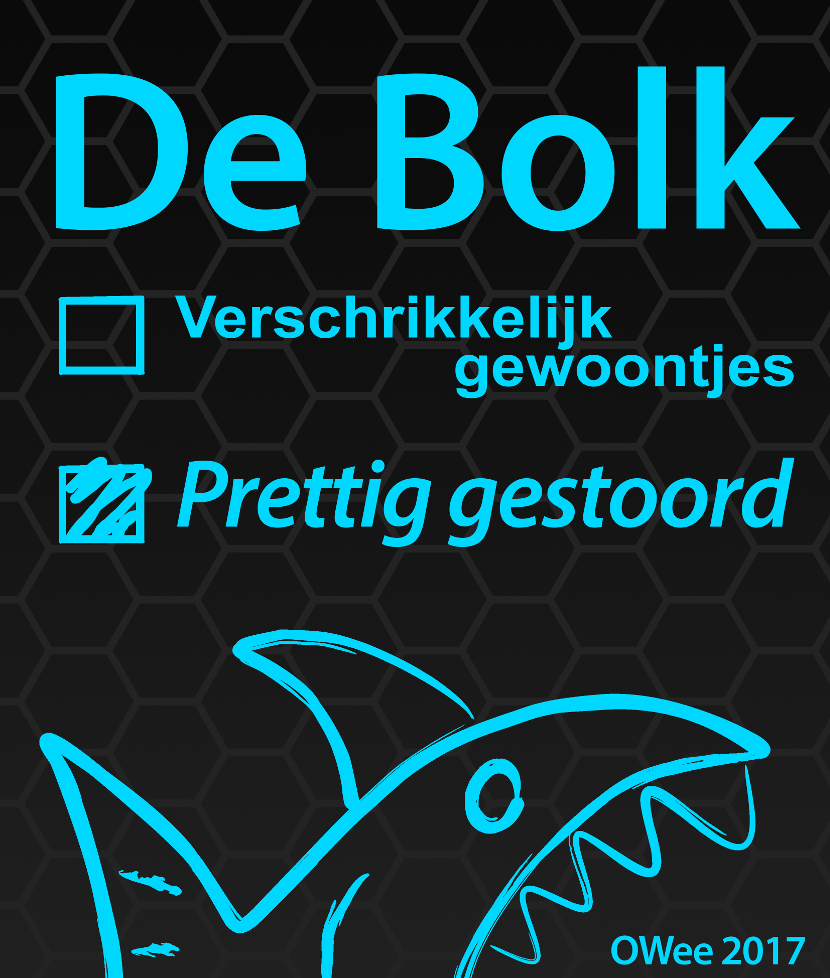

Welkom op de OWee-website van de Bolk!

Ben jij er al klaar voor?
De OWee markeert het begin van een nieuwe periode in je leven: je studententijd. Maar hoe gaat jouw studentenleven eruit zien?
Van 20 t/m 24 augustus is Delft een groot feest, speciaal voor jou als eerstejaars. De OWee is jouw moment om jezelf opnieuw uit te vinden en te ontdekken wat er nu echt bij jou past.
De hele week organiseert de Bolk speciaal voor jou allerlei gave activiteiten, zodat je helemaal uit je Bolk kan gaan om jou studietijd een onvergetelijke start te geven!
Benieuwd wat er allemaal te doen gaat zijn, en wat de Bolk allemaal te bieden heeft? Daar is deze website speciaal voor gebouwd! Kijk lekker rond, zet het in je agenda en kom langs tijdens de OWee!